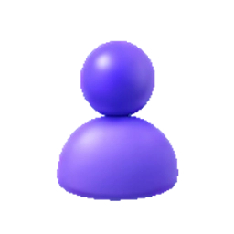
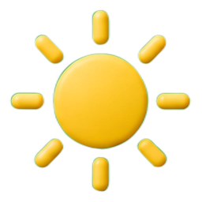
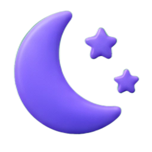

Интерактивная доска — это современное векторное пространство для рисования, скетчинга, аннотирования документов и создания геометрических схем на бесконечном холсте.
Хколст не ограничен по размеру. Перемещайтесь в любых направлениях и масштабируйте схемы без потери качества.
Все ваши изменения автоматически записываются в память браузера. Вы никогда не потеряете свою работу при закрытии страницы.
Интерфейс выполнен в премиальном стекломорфном стиле с плавными анимациями, 3D-кнопками и тактильной обратной связью.
Используйте горячие клавиши для быстрого вызова функций без необходимости тянуться к панели инструментов.
Вы можете легко ориентироваться и перемещаться в пространстве доски.
Настройте кисти и выберите подходящий способ создания графики.
Классическое свободное рисование. Вы можете настроить цвет и толщину линии.
Распознает ваши эскизы. Нарисуйте от руки кривой круг, квадрат или линию, и система автоматически превратит их в ровную геометрическую фигуру. Если задержать перо в конце линии на 0.5 сек, она выровняется по направлению.
Рисование векторных кривых Безье по опорным точкам. Кликайте на холсте для добавления узлов. Нажмите Enter или Esc для завершения кривой. После этого в режиме выделения можно перетаскивать узлы и их направляющие «усы».
Стирает векторные объекты целиком при пересечении их контура. Это позволяет быстро очищать ненужные штрихи.
Кликните по холсту, чтобы добавить текстовую надпись. Поддерживается перенос строк, выбор шрифта (Montserrat, Playfair, Courier и др.), размеров, жирности и курсива. Выделите текст и дважды кликните по нему для редактирования.
Используйте готовые плоские и объемные шаблоны для быстрого построения схем.
Выберите нужную форму во всплывающем меню 2D фигур. Зажмите левую кнопку мыши и потяните, чтобы растянуть фигуру на холсте. Удерживайте Shift, чтобы сохранять равные стороны (например, получить идеальный квадрат вместо прямоугольника или круг вместо эллипса).
Рисование 3D фигур реализовано по пошаговому принципу:
Все 3D фигуры строятся в проекции с автоматической отрисовкой ребер:
После создания элементов вы можете трансформировать и группировать их.
Нажмите правой кнопкой мыши на выделенный объект, чтобы открыть меню действий:
Вы также можете управлять слоями через боковую панель слоев, где отображаются все объекты.
Узнайте о продвинутых функциях доски для профессиональной работы.
Нажмите иконку скрепки для загрузки многостраничных документов PDF или картинок. Страницы PDF автоматически конвертируются в изображения и раскладываются на холсте. Поверх них можно делать любые пометки. Также работает перетаскивание файлов мышкой (Drag and Drop) на окно браузера.
Виртуальные инструменты для измерения расстояний и углов. При активной линейке кисть примагничивается к её ровной грани, помогая проводить идеально прямые штрихи.
Через настройки вы можете сменить тему, отключить анимации и эффекты прозрачности (для увеличения производительности на старых ПК), настроить магнитную привязку к сетке и включить сглаживание линий.
Выгружайте ваши наработки в файл формата JSON или экспортируйте готовую доску в изображение JPG с высоким разрешением с помощью соответствующих кнопок.
В настройках доступна опция "Магнитная привязка". Она позволяет легко выравнивать элементы относительно друг друга и линий фоновой сетки (клетка/точки). Вы также можете зажать клавишу Alt во время перемещения, чтобы временно инвертировать состояние привязки.
Попробуйте ввести другие ключевые слова или сократить запрос.
Вы уверены, что хотите полностью очистить доску? Это действие нельзя будет отменить.